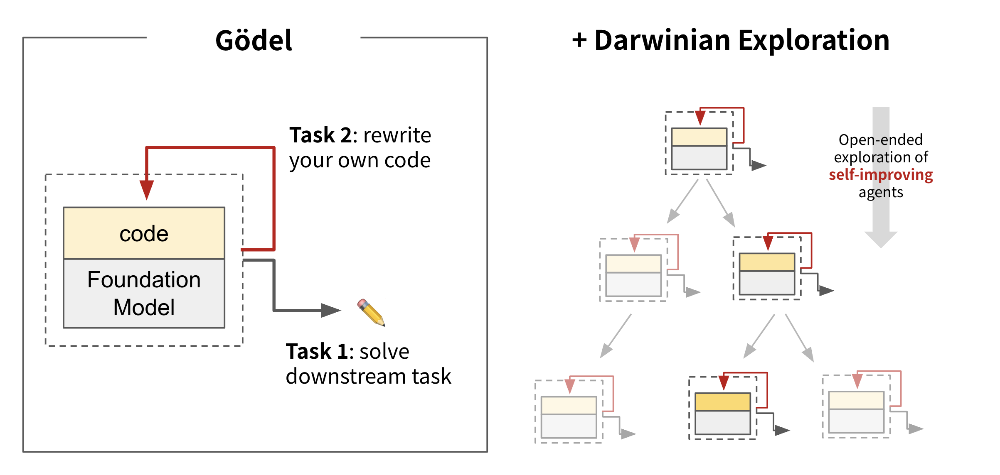

Share the Best: I
Gaining Inspiration from Darwinian Evolution: Towards Self-Referential and Self-Improving AI System

Illustration of incorporating Darwinian exploration into Gödel machine.
Beginning
One tantalizing path toward that goal is an AI that improves itself by rewriting its own code, including any code responsible for learning. This idea, also known as a Gödel Machine, was proposed by Jürgen Schmidhuber decades ago, which is a hypothetical self-improving AI.
Recently, researchers from University of British Columbia, Vector Institute, Sakana AI, and Canada CIFAR AI Chair proposed a system (Darwin Gödel Machine, DGM) that harnesses the principles of open-ended algorithms like Darwinian evolution to search for improvements that empirically improve performance.
DGMs leverage foundation models to propose code improvements, and use recent innovations in open-ended algorithms to search for a growing library of diverse, high-quality AI agents. Experiments show that DGMs improve themselves the more compute they are provided. In line with the clear trend that AI systems that rely on learning ultimately outperform those designed by hand, there is a potential that DGMs could soon outperform hand-designed AI systems.
The Evolution Pipeline

Dataset Construction and Statistics.
(a) The data construction pipeline for VGBench, SpatialScore, and SpatialScore-Hard;
(b) Representative examples from distinct categories in SpatialScore;
(c) Data distribution statistics across VGBench, SpatialScore, and SpatialScore-Hard.

Data sources and task category statistics visualization of SpatialScore.

Data sources and task category statistics visualization of VGBench.
SpatialAgent Architecture

Architecture and Workflow of SpatialAgent.
(a) Specialized spatial understanding tools integrated in SpatialAgent;
(b) The Plan-Execute paradigm for hierarchical task decomposition and stepwise execution;
(c) The ReAct paradigm for iterative interaction and dynamic strategy refinement.
Results
Quantitative Results

Quantitative Results on SpatialScore.
Here, Count., Obj-Loc., Pos-Rel., Dist., Obj-Prop., and Cam.&IT. refer to Counting, Object Localization, 3D Positional Relation, Depth & Distance, Object Properties, and Camera & Image Transformation, respectively.
Results with the best and second best results are bolded and underlined, respectively.

Quantitative Results on SpatialScore-Hard.
Our SpatialAgent demonstrates substantially greater performance improvements on this carefully curated, challenging subset, highlighting its specialized capabilities for spatial understanding tasks.

Quantitative Results on VGBench.
Here, Homo., Pose-Est., 3D-Recon., Tracking, and Obj-Pos. denote Homography Matrix, Pose Estimation, 3D Reconstruction, Point Tracking, and Object Position, respectively.
Results with the best and second best results are are bolded and underlined.
Qualitative Results

Qualitative Results.
We present the comprehensive reasoning process of SpatialAgent against the direct responses of other models.
While occasional errors occur due to tool execution or interpretation mistakes, these limitations are expected to diminish as MLLMs continue to advance.
References
[1] Zhang, Jenny, et al. "Darwin Godel Machine: Open-Ended Evolution of Self-Improving Agents." arXiv preprint arXiv:2505.22954 (2025).
[2] https://sakana.ai/dgm/